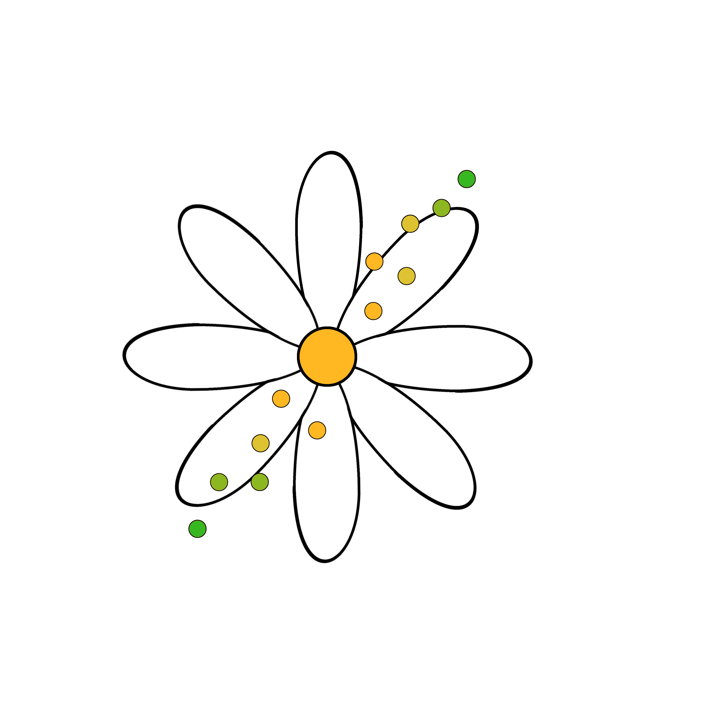

| Dataset | Details | Modules | Original Source |
|---|---|---|---|
| Baltimore Rainfall | Monthly precipitation in the Hamilton neighborhood of Baltimore for the years 2009 - 2024 | • Homework 3 | Retrieved from https://agacis.rcc-acis.org/?fips=24510 |
| Baltimore Surface Water Quality | The results of two long-term routine monitoring programs at over 100 fixed sites in the City’s streams and Harbor, gathered by the Department of Public Works. The data is available through the Open Baltimore project. | • Homework 3 | https://data.baltimorecity.gov/datasets/85f6cd8c0a8646d6b13239c83df51f83/about |
| CalEnviroScreen | CalEnviroScreen4.0 data. This dataset was gathered by the California Office of Environmental Health Hazard Assessment. CalEnviroScreen ranks census tracts in California based on potential exposures to pollutants, adverse environmental conditions, socioeconomic factors and the prevalence of certain health conditions. | • Data Input • Subsetting Data in R • Data Summarization • Data Cleaning • Intro to Data Visualization • Data Visualization • Factors • Statistics • Data Output • Functions |
https://calenviroscreen-oehha.hub.arcgis.com/ |
| Climate change disasters | Data about the number of people affected by total disasters (including droughts, extreme temperatures, floods, landslides, storms, and wildfires) by country and year. | • Manipulating Data in R Lab | International Monetary Fund (IMF) |
| CO heat-related ER visits | Age-adjusted visit rates and total number of visits for all genders by Colorado county for 2011-2023, collected by the Colorado Environmental Public Health Tracking program | • Data Input • Subsetting Data in R • Data Summarization • Data Cleaning • Intro to Data Visualization • Data Visualization • Factors • Statistics • Data Output • Functions |
https://coepht.colorado.gov/heat-related-illness |
| COVID wastewater surveillance | SARS-CoV-2 viral load measured in wastewater between 2022 and 2024, collected by the collected by the National Wastewater Surveillance System | • Data Classes | https://data.cdc.gov/Public-Health-Surveillance/NWSS-Public-SARS-CoV-2-Wastewater-Metric-Data/2ew6-ywp6/about_data |
| Flu internet searches | This study looks at the use of internet search data to track prevalence of Influenza-Like Illness (ILI) | • Statistics | https://www.nature.com/articles/s41467-020-20206-z |
| Nitrate exposure | The amount of people in Washington exposed to excess levels of nitrate in their water between 1999 and 2020 by quarter, collected by the Washington Tracking Network | • Manipulating Data in R | https://doh.wa.gov/data-and-statistical-reports/washington-tracking-network-wtn/drinking-water |
| Weather on Mars | Information about temperature measures from the Rover Environmental Monitoring Station (REMS) on Mars, collected by Spain and Finland | • Homework 2 | https://www.kaggle.com/datasets/deepcontractor/mars-rover-environmental-monitoring-station/data |
| Yearly CO2 emissions | Estimated CO2 emissions in tonnes or metric tons (equivalent to approximately 2,204.6 pounds) per person by country for 265 countries between the years 1751 and 2014. | • Data Subsetting • Manipulating Data in R • Functions |
https://www.opencasestudies.org/ocs-bp-co2-emissions; originally from https://www.gapminder.org/data/ and https://cdiac.ess-dive.lbl.gov/ |
| mtcars | Classic dataset in R. The data was extracted from the 1974 Motor Trend US magazine, and comprises fuel consumption and 10 aspects of automobile design and performance for 32 automobiles (1973 to 1974 models) | • Data Subsetting | R documentation |
The other datasets used in the course are datasets made for illustrative purposes.
| Repository/Database | Details |
|---|---|
| Census Data | Learn about America’s People, Places, and Economy. There is also a package called tidycensus for working with census data easily in R. |
| Centers for Disease Control and Prevention (CDC) Data | Lists many data sources! Health statistics, injuries, vaccination, disability & health, chronic disease rates, and many more! |
| Climate and Health Outcomes Research Data Systems (CHORDS) | Place based environmental exposures on health outcomes |
| Climate-related Disasters | Trend in these climate-related disasters over time. Check out more of the IMF’s data here |
| CO2 Emissions Data | U.S. Greenhouse Gas Emissions and Sinks and the Inventory of U.S. Greenhouse Gas Emissions and Sinks by State |
| data.gov | Thousands of data sources! |
| Environmental Protection Agency (EPA) Data | Lists many data sources! Data related to air quality, superfund sites, chemicals, water, and more. |
| Healthdata.gov | Lots of data related to COVID-19, hospitals, etc. |
| National Institute of Environmental Health Sciences (NIEHS) Databases | Lists many data sources! Includes Chemical Effects in Biological Systems (CEBS), Comparative Toxicogenomics Database, NIEHS-Funded Epidemiology Resources Faceted Search Tool, many more! |
| National Institute of Environmental Health Sciences (NIEHS) Domain Specific Data Repositories | Lists many data sources! Includes HydroShare, National Centers for Environmental Information (NCEI), Gene Expression Omnibus, many more! |
| NOAA National Climatic Data Center (NCDC) | NOAA’s National Climatic Data Center (NCDC) maintains the world’s largest climate data archive and provides climatological services and data to every sector of the United States economy and to users worldwide. |
| World Health Organization (WHO) Data | Data on health and health-related indicators |
This work is licensed under a Creative Commons Attribution-NonCommercial-ShareAlike 4.0 International License.
DaSEH is funded by the National Institute of Environmental Health Sciences 1R25ES035590-01.